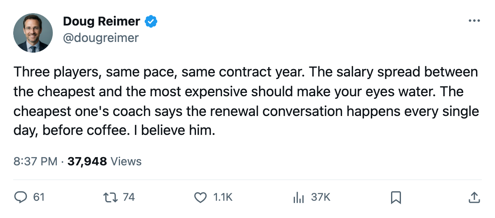
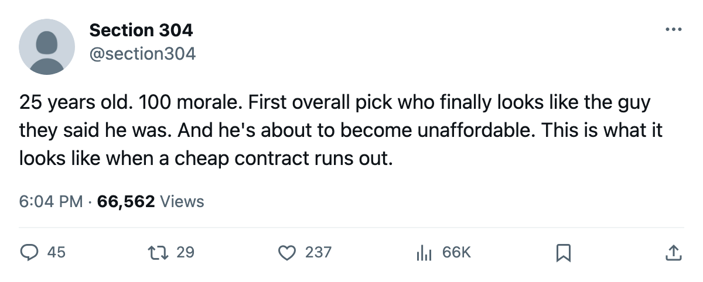

12 Points in 8 on $2.60M: Three Players at a 123 Pace, Ranked by Salary
Tampa Bay's Lecavalier, Colorado's Forsberg and Colorado's Hejduk are producing identical pace on the same contract terms. The salary spread runs from $2.50M to $9.90M.
 Doug ReimerAnalytics editor, ex-video coach · The Slot Report
Doug ReimerAnalytics editor, ex-video coach · The Slot Report
Three players with one year left on their contracts have produced 12 points in 8 games: a pace of 123 points per 82.  Peter Forsberg89 costs $9.90M.
Peter Forsberg89 costs $9.90M.  Vincent Lecavalier89 costs $2.60M.
Vincent Lecavalier89 costs $2.60M.  Milan Hejduk82 costs $2.50M. The method is simple: filter the Contract Ledger for expiring deals, rank by pace, and compare against salary.
Milan Hejduk82 costs $2.50M. The method is simple: filter the Contract Ledger for expiring deals, rank by pace, and compare against salary.
| Player | Club | Position | Overall | Salary | GP | Points | Pace | Morale |
|---|---|---|---|---|---|---|---|---|
| Milan Hejduk |  Colorado Avalanche Colorado Avalanche | RW | 88 | $2.50M | 8 | 12 | 123 | 100 |
| Vincent Lecavalier |  Tampa Bay Lightning Tampa Bay Lightning | C | 86 | $2.60M | 8 | 12 | 123 | 100 |
| Peter Forsberg | Colorado Avalanche | LW | 95 | $9.90M | 8 | 12 | 123 | 100 |
All three sit at 100 morale. All three carry one year. Forsberg and Hejduk are teammates at Colorado Avalanche; the Lightning carry Lecavalier on a payroll of $59.79M at $5.44M a point. Lecavalier's individual dollar figure is the third-lowest salary among the 30 highest-graded expiring contracts in the league.
Vincent Lecavalier is 25, drafted first overall in 1998, and in his seventh professional season. He plays 26.8 minutes a night. The Book has him at 86 with the Development Index showing no movement from his base. His strongest attributes are his acceleration and speed at 93 each, his shot power at 92, and his agility at 92. His lowest are his fighting at 51 and his injury resistance at 50. He carried a leg injury last season between late February and early April.
The coach says the conversation is daily
Tampa Bay's Michael Burt addressed the renewal situation directly when he spoke to The Tunnel's Jan Kowalczyk after the team's 4-3 win over Tampa on October 23.
"Every day," Burt said, when asked whether he thinks about Lecavalier's contract. "You've got a 25-year-old center at $2.60M, an 86 in the Book, and a year on the clock. The moment that number moves up six, the moment the League Scouting Bureau edition changes and he's in the high 80s, the money changes a lot."
He went further: "I let him play through it. You don't sit a man down in the middle of a run like this and put numbers in front of him. He's got 7 in 5, he's got his legs, morale is 100. I want that staying exactly where it is through March."
That quote was from October 24, when Lecavalier had 7 points in 5 games. He has added 5 more in 3 since, putting him at 12 in 8. The pace is unchanged at 123. The morale is unchanged at 100. The contract is unchanged at $2.60M with one year remaining.
What the team looks like around him
Tampa Bay sits 6th in the Eastern Conference with 11 points through 8 games. The club's average morale is 97.7, third-highest in the league behind only  Vancouver Canucks at 98.3 and
Vancouver Canucks at 98.3 and  Florida Panthers at 97.9. Of Tampa Bay's 34 contracted players, 23 carry morale at 100. The team has logged 4 injury spells and 1 day lost, tied with
Florida Panthers at 97.9. Of Tampa Bay's 34 contracted players, 23 carry morale at 100. The team has logged 4 injury spells and 1 day lost, tied with  Ottawa Senators and
Ottawa Senators and  San Jose Sharks for the lowest days-lost total in the league.
San Jose Sharks for the lowest days-lost total in the league.
Burt, asked whether Lecavalier still has to prove anything: "A guy who's done proving himself. People still talk about him like a project. He's 25. He's got 7 in 5 and his morale is 100. I watch him and I think this is the year the number jumps again."
The number has not yet jumped. The Book still reads 86, unchanged from the base. If the Bureau revises and Lecavalier lands at 92 or above, his next contract starts at a number well north of $2.60M. At $9.90M, Forsberg is the ceiling the market sets for a 95-rated center on expiring paper. Hejduk, at 88, costs $2.50M. Forsberg gets $9.90M for his 12 points. Lecavalier gets $2.60M for his.
The comparison is not perfect: Forsberg and Hejduk play for a $68.21M payroll at $6.82M a point that has lost every division series since 2001. Tampa Bay plays for a $59.79M payroll at $5.44M a point. Neither club has won a Cup. But the per-point cost on the ice right now, at this pace, for this grade range, is what the market pays. The coach says he thinks about that every morning before coffee.

